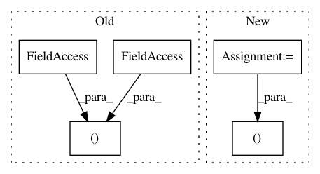

b6dcbf921111667f653d95c2e46fd93b6f23b6c9,examples/real_nvp_2d_rl_example.py,RealNVP2dRlExample,run,#RealNVP2dRlExample#,72
Before Change
for epoch in range(1, NUM_EPOCHS+1):
for i in range(1, NUM_STEPS+1):
_, sampled_z, forward_loss = self.session.run(
(
self.policy_distribution.train_op,
self.policy_distribution.z,
self.policy_distribution.forward_loss,
),
feed_dict={
self.policy_distribution.batch_size: self._batch_size,
}
After Change
)
if i % 20 == 0:
sampled_x, sampled_y = self.session.run(
(self.policy.x, self.policy.y),
feed_dict={ self.policy.batch_size: self._batch_size }
)
In pattern: SUPERPATTERN
Frequency: 3
Non-data size: 5
Instances
Project Name: rail-berkeley/softlearning
Commit Name: b6dcbf921111667f653d95c2e46fd93b6f23b6c9
Time: 2018-05-22
Author: kristian.hartikainen@gmail.com
File Name: examples/real_nvp_2d_rl_example.py
Class Name: RealNVP2dRlExample
Method Name: run
Project Name: rail-berkeley/softlearning
Commit Name: 6f25c33d904cf31911edee142d2b1247a3eeba7b
Time: 2019-03-08
Author: kristian.hartikainen@gmail.com
File Name: examples/development/main.py
Class Name: ExperimentRunner
Method Name: _build
Project Name: rail-berkeley/softlearning
Commit Name: 36eb9f8e99fd5e87b4969fc027467cc5c3f6d55e
Time: 2018-06-18
Author: azhou42@berkeley.edu
File Name: softlearning/algorithms/sac.py
Class Name: SAC
Method Name: log_diagnostics